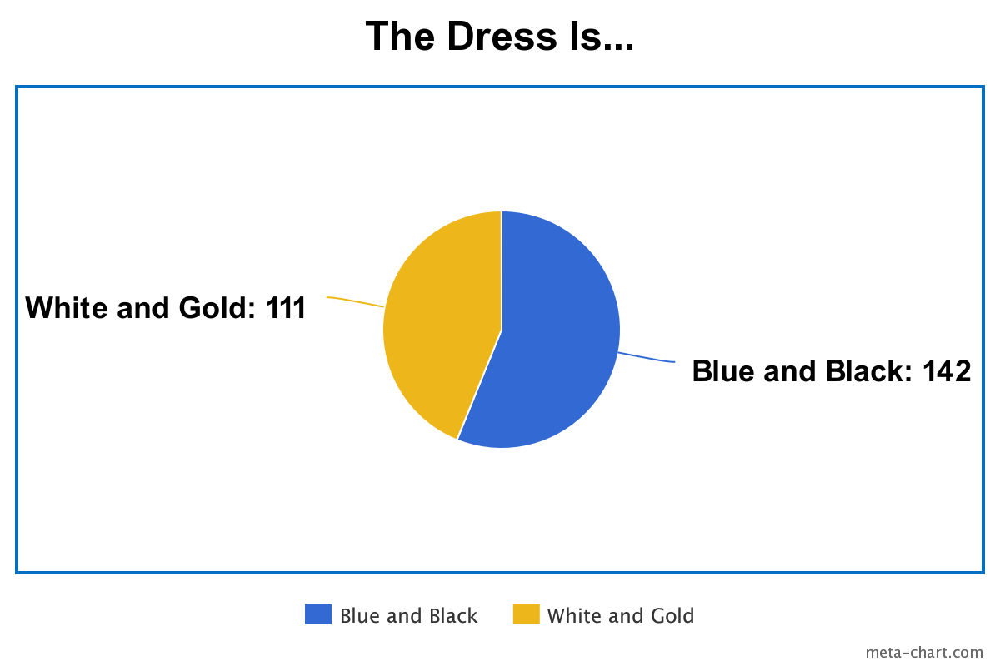

"It's white and gold!"
"It's blue and black!"
This puzzle shares its name with the My Little Pony song "Art of the Dress", but it's not about that song. Instead, it's literally art of The Dress.
Every 10 seconds, the colors in the dress shift from white-and-gold stripes to blue-and-black stripes. The bottom of the dress stand has Morse code, which decodes to PANTONE.
This indicates we should lookup the Pantone color name for each color. The color names are all from Pantone's cotton section, as hinted in the flavortext. Extracting the exact colors of the white-and-gold version and the blue-and-black version, and looking up the Pantone color name for each, we see that the non-color portion of each name has the same length, and they overlap at exactly one letter.
| Hex Color Codes | Color Names |
|---|---|
| #BD9865 #6C5765 |
PALE Gold Black PLUM |
| #EDF1FE #95C0CB |
BRILLIANT White PORCELAIN Blue |
| #C77943 #4D4B50 |
Golden OCHRE Blackened PEARL |
| #F5ECD2
#E1E3DE |
WINTER White MYSTIC Blue |
| #BB7A2C
#2B3042 |
INCA Gold Black IRIS |
| #EDE6DB
#0F4C81 |
WHISPER White CLASSIC Blue |
| #D7942D
#26262A |
Golden ORANGE Black BEAUTY |
| #E4D7C5
#3686A0 |
White SWAN Blue MOON |
Reading down the dress from top to bottom gives PARTISAN. Submitting this tells your team to send an email to puzzlesaremagic+thedress@gmail.com, where the subject is either "White and Gold" or "Blue and Black". Sending either subject gave solvers this reply.
Thanks for voting!
This dress would go great with some GREEN BOOTS. You should submit that!
The answer is one last colorful fashion piece, GREEN BOOTS.
First, the important part. The votes are in, and 253 votes later, we can finally settle what color The Dress is.

For the record, I picked an extraction that avoided making a value judgment on the color of the dress, but I'm firmly in the White and Gold camp. These results disgust me.
On to the puzzle! I had a very hard time coming up with a Rarity puzzle. I did a lot of research on gemstones, hairstyles, and details of dress making, but wasn't able to find a puzzle idea I was happy with.
While watching Art of the Dress for the 14th time to see if there were any interesting visuals or lyrics I could pull from the song, I idly thought that one famous dress was The Dress, and wouldn't it be funny if the puzzle was literally artwork of The Dress? The rest of the puzzle came together almost immediately. I tried to avoid using Pantone colors, but Web colors didn't have enough shades of white, gold, blue, and black to work with.
As you may have noticed during hunt, getting exact hex colors from an animation to solvers is harder than you'd think! The first testsolve used GIF, but GIF does lossy compression if you use more than 256 different colors across the entire animation, so that didn't work. After some searching, WebP seemed like the best supported image format that supported both animations and lossless compression.
That worked fine the next 2 testsolves, until a team decided to take a screenshot of the animation instead of using a GIF exploder like ezGIF (which, despite its name, supports WebP images). After a long Q&A session, we figured out that on some machines, but not all, screenshots would slightly change the pixel values, and unfortunately, some Pantone colors only differ by 1 in a single RGB channel, so the exact pixel values were important. Out of exasperation I gave them the intended images directly...and they still got the wrong data.
After another Q&A session, I found out they were using imagecolorpicker.com, one of the first search results for getting colors out of an image. In its backend, the site converts all uploaded images to JPEG, even if they were initially in a lossless format like PNG, so the colors that come back to you don't match the original ones.
At this point, perhaps the puzzle should have been cut...but every testsolver who didn't hit these color issues thought the puzzle was really cute, and I was a big fan of the "email to vote" interaction. I settled for adding as much warning as I could, without ruining the parts of the puzzle I found elegant.
Given a do-over, I would have provided both the animation, and smaller download links for the two dresses. Extracting the correct color values was not supposed to be the hard part of the puzzle.
It also didn't help that Pantone's hex-to-color tool sometimes recommends a color that doesn't match the color exactly, over a color that does match exactly. The correct color is always in the list of options, but I have no idea how you could even code an error like that...
In short, we're sorry if you got hit by any of these issues. The lesson here is that exact colors are horribly complicated, and elegant ideas don't always lead to elegant results.